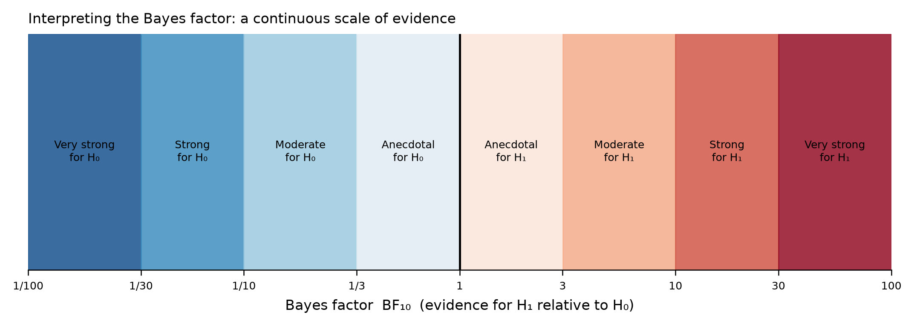
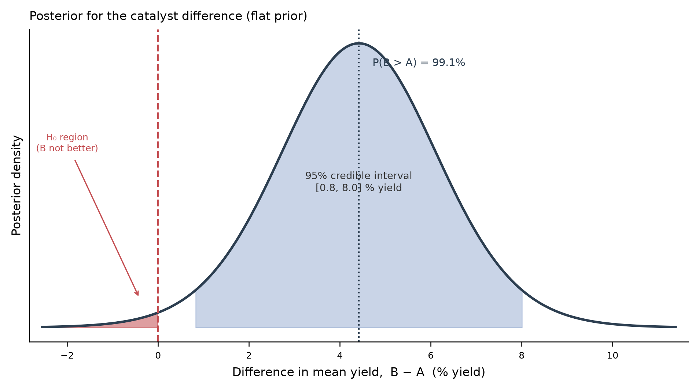

14. Bayesian Statistics: An Alternative to Hypothesis Testing
This session returns to a Bayesian view of probability as a degree of belief and uses this framework to answer the same questions that we have been asking with the t-test and ANOVA. The goal is not to replace what you have learned, but to add a second lens: one that reports how much the data support one hypothesis over another and how probable a conclusion is, rather than only “would these data be this extreme if there were no effect?”
Orientation
Today, we will return to “alternative statistical methods” but, as far as possible, we will continue to use familiar toolkits:pingouin, scipy, numpy, pandas. Perhaps surprisingly, you have already been computing a Bayesian quantity without knowing it.
A Quick Recap: What the Frequentist Approach Gives Us
Recall the logic from the frequentist approach we have so far relied on: a test fixes a null hypothesis \(H_0\) (no effect) and computes a p-value: the probability of observing data at least as extreme as ours if \(H_0\) were true.
\[p = P(\text{data this extreme or more} \mid H_0)\]
This value is a conditional probability pointing in one direction only. It is easy to misread it as the thing we actually want to know: the probability that \(H_0\) is true given our data, \(P(H_0 \mid \text{data})\). But both sadly and importantly, the p-value is not that quantity! Additionally, the p-value also cannot provide evidence for \(H_0\); a large p-value means only “we failed to reject,” never “the null is supported.”
Bayesian methods address both gaps directly, allowing us to
- quantify evidence for a hypothesis (including for the null),
- report the probability of a hypothesis given the data (a quantity that may feel more satisfying than a p-value), and
- incorporate prior information when we have it.
Bayes’ Theorem, Applied to Hypotheses
Previously, we saw the formalization of Bayes’ theorem for a hypothesis H and data D:
\[P(H \mid D) = \frac{P(D \mid H)\, P(H)}{P(D)}\]
| Term | Name | Meaning |
|---|---|---|
| \(P(H \mid D)\) | Posterior | Belief in the hypothesis after seeing the data |
| \(P(H)\) | Prior | Belief in the hypothesis before seeing the data |
| \(P(D \mid H)\) | Likelihood | Probability of the data if the hypothesis holds |
| \(P(D)\) | Marginal | Total probability of the data; normalizes the result |
When we compare two competing hypotheses (often a null \(H_0\) and an alternative \(H_1\)), we can write Bayes’ theorem for each and divide. The marginal term \(P(D)\) is identical in both and cancels:
\[\underbrace{\frac{P(H_1 \mid D)}{P(H_0 \mid D)}}_{\text{posterior odds}} = \underbrace{\frac{P(D \mid H_1)}{P(D \mid H_0)}}_{\text{Bayes factor } BF_{10}} \times \underbrace{\frac{P(H_1)}{P(H_0)}}_{\text{prior odds}}\]
The middle term, the ratio of how well each hypothesis predicted the data, is the Bayes factor. It is the core of Bayesian hypothesis testing.
The Bayes Factor
The Bayes factor \(BF_{10}\) measures how much more likely the observed data are under \(H_1\) than under \(H_0\):
\[BF_{10} = \frac{P(D \mid H_1)}{P(D \mid H_0)}\]
The subscript “10” gives the direction: evidence for hypothesis 1 relative to hypothesis 0. Its reciprocal, \(BF_{01} = 1 / BF_{10}\), points the other way.
- \(BF_{10} = 10\) → the data are 10X more likely under \(H_1\) than under \(H_0\).
- \(BF_{10} = 1\) → the data are equally consistent with both; no evidence either way.
- \(BF_{10} = 0.1\) → the data are 10X more likely under \(H_0\), genuine evidence for the null, something a p-value cannot provide.
Unlike the p-value, the Bayes factor is symmetric: it can favor the null, favor the alternative, or sit near 1 and tell you the experiment was simply uninformative. There is no “fail to reject” limbo.
A widely used descriptive scale groups Bayes factors into bands of evidential strength. These labels are conventions(!), a Bayes factor is a continuous measure, and the same concerns about arbitrariness of frequency statistics metrics apply here too.

| \(BF_{10}\) | Evidence for \(H_1\) | \(BF_{10}\) | Evidence for \(H_0\) |
|---|---|---|---|
| 1 - 3 | Anecdotal | 1 - 1/3 | Anecdotal |
| 3 - 10 | Moderate | 1/3 - 1/10 | Moderate |
| 10 - 30 | Strong | 1/10 - 1/30 | Strong |
| 30 - 100 | Very strong | 1/30 - 1/100 | Very strong |
| > 100 | Decisive | < 1/100 | Decisive |
You Have Already Computed a Bayes Factor
When you ran a t-test in pingouin in a previous session, the output table included a column that I said was not relevant for now: BF10. Let us look at BF10 now in an example comparing the percent yield of a reaction run with two different catalysts.
The table reports the frequentist outputs you already know (the t-statistic, degrees of freedom, p-value, 95% CI, Cohen’s d, and power), and it also outputs the Bayes factor BF10. Let us pull out the p-value and the Bayes factor and read them side by side:
The two numbers tell a consistent but differently phrased story:
- The p-value (≈ 0.02) says: if the two catalysts truly had equal mean yield, data this extreme would be unlikely. Since it falls below the conventional \(\alpha\) = 0.05, we reject \(H_0\).
- The Bayes factor (≈ 3) says: the observed data are about 3X more likely under “the catalysts differ” than under “they are the same.” On the scale above, that is only moderate evidence for \(H_1\).
Consider this further: the p-value crossed its threshold and delivered a “reject” vote, but the Bayes factor indicates the evidence only moderate. The two methods do not map one-to-one: a result can be “statistically significant” and still represent only modest evidence once you ask how much more likely the data are under one hypothesis than the other. The Bayes factor adds a statement of evidential strength** on a continuous scale, rather than a binary reject / fail-to-reject verdict.
BF10 come from?
pingouin computes the Bayes factor for the t-test using the default Jeffreys-Zellner-Siow (JZS) prior with a scale of \(r = 0.707\) on the effect size (the r argument of pg.ttest). The prior encodes a mild, reasonable belief that if an effect exists it is more likely to be small-to-moderate than enormous. You can see the same number from the t-statistic and sample sizes alone:
Bayes and the Null
The most useful thing a Bayes factor does is something no p-value can: provide evidence that there is no meaningful difference. Consider comparing two catalysts that genuinely perform the same.
Here the frequentist test “fails to reject” \(H_0\), which is not the same as supporting \(H_0\)! The non-significant p-value is compatible with “no effect” and with “a real effect we lacked power to detect.” It cannot distinguish them, but the Bayes factor can. A \(BF_{10}\) below 1 (equivalently \(BF_{01} > 1\)) says the data are positively more consistent with “no difference.” We have evidence for the null, not merely an absence of evidence against it. Practically, this is the difference between “our assay could not tell these catalysts apart” and “our assay shows these catalysts behave the same.”
The Estimation View: Posteriors and Credible Intervals
The Bayes factor answers “is there an effect?” A second Bayesian output answers “how big is it, and how sure are we?” This is estimation question and the domain of belief that we discussed before.
Instead of a single point estimate, Bayesian estimation produces a posterior distribution over the quantity of interest. In our example, the difference in mean yield between catalysts B and A. From it we read a credible interval.

Read the credible interval carefully, because this is where Bayesian and frequentist language diverge most sharply:
| 95% confidence interval (Session 7) | 95% credible interval (here) | |
|---|---|---|
| What is random? | The interval (varies run to run) | The parameter (we are uncertain about it) |
| Correct reading | “95% of intervals built this way contain the true value” | “There is a 95% probability the true value lies in this interval” |
| The intuitive reading | Wrong | Correct |
Interestingly, the general interpretation students often want to give a confidence interval (“I’m 95% sure the true difference is in here”) is what a credible interval provides. The posterior also lets us make direct probability statements with no frequentist equivalent, such as \(P(\text{B} > \text{A})\) read straight off the distribution.
The numbers above use a flat (uninformative) prior, under which the posterior for the mean difference coincides numerically with the frequentist t-interval. We use this deliberately: it isolates the one thing that changes, the interpretation, without new machinery. With an informative prior (real prior knowledge about catalyst behavior), the posterior would shift. Full posterior estimation with chosen priors uses dedicated samplers, but this material is beyond an introductory course.
A flat prior says “before seeing data, any difference is as plausible as any other.” That is rarely what a scientist truly believes because usually our experiments are based on fundamental knowledge at a minimum. If before the experiment you expected two catalysts to be broadly similar, a difference of more than a few percent would be surprising. You can encode that as an informative prior: a distribution centered at 0 (no difference) with a modest spread, say a Normal with standard deviation 2% yield, written \(N(0, 2^2)\).
For a Normal prior and an (approximately) Normal likelihood, the posterior is available in closed form (no sampler needed) as a precision-weighted blend of prior and data:
A skeptical prior pulls the estimate toward zero, the posterior mean drops from about 4.4% to 2.5%, and the credible interval now reaches just below zero. The data still move belief strongly toward “B beats A” (\(P(\text{B} > \text{A})\) falls only from 0.99 to about 0.97), but the size of the claimed effect is mediated by prior skepticism. This is the Bayesian approach in action: the posterior is a compromise between what you believed and what you measured, and the more data you collect, the more the likelihood dominates and the choice of prior washes out.
Caveat: An informative prior is a scientific claim you must be able to justify and report, just like with reporting out \(\alpha\) values for the frequency based approach!
Bayesian Comparison of More Than Two Groups
We previously saw that with more than two groups, we used ANOVA, and then used post-hoc tests to find which groups differ. Theoretically, Bayesian workflow parallels this step for step. Unfortunately, pingouin’s anova does not return a Bayes factor directly, but we can obtain a well-established approximation from the ANOVA sums of squares using the BIC (Wagenmakers, 2007). This approximation will be applied in this course so that we can continue using the same python tools.
Now compare three catalysts with the method that we have previously discussed. Remember, if the dataframe starts wide, we need to melt them to long format for pingouin.
Both agree overwhelmingly that the catalysts differ, but the Bayes factor states how overwhelmingly, on the same continuous evidence scale as before. And analogous to how obtaining a significant ANOVA prompts performing a post-hoc tests, the Bayesian workflow computes a pairwise Bayes factor for each comparison:
In the frequentist workflow, running many pairwise tests inflates the family-wise error rate, which is why we use post-hoc corrections. The Bayesian framework handles accumulating comparisons differently: through the prior and hierarchical models (beyond this course). Nonetheless, the implementation caution is the same: the more comparisons you make, the more careful you must be! Reporting a Bayes factor for each comparison does not license cherry-picking the largest one after the fact.
Putting It Together: A Decision Table
| Question | Frequentist answer | Bayesian answer |
|---|---|---|
| Is there an effect? | p-value vs. threshold 3b1 | Bayes factor \(BF_{10}\) |
| Can I support “no effect”? | No (only “fail to reject”) | Yes (\(BF_{10} < 1\)) |
| How big is the effect? | Point estimate + 95% CI | Posterior + 95% credible interval |
| How should I read the interval? | “95% of such intervals cover the truth” | “95% probability the value is in here” |
| Can I state P(hypothesis)? | No | Yes (posterior probability) |
| Does it use prior knowledge? | No | Yes (explicitly) |
Strengths, Costs, and Honest Cautions
However, Bayesian methods are not a cure-all!
Strengths
- Evidence is reported on a continuous, symmetric scale, including evidence for the null.
- Results answer the question we usually meant to ask: \(P(\text{hypothesis} \mid \text{data})\).
- Credible intervals carry the intuitive interpretation.
- Prior knowledge is incorporated explicitly and transparently.
Costs and cautions
- The prior is a choice. It must be stated and justified! A poorly chosen prior can over-rule true information.
- Bayes factors depend on the prior: Two analysts with different priors can report different Bayes factors from identical data.
- Bayes, like frequency statistics, still relies on conventions: “Strong evidence” at \(BF_{10} = 10\) is as arbitrary as \(\alpha = 0.05\).
- Most published chemistry and biology is still frequentist. Bayesian methods are growing, but it is important to be fluent in both.
Statistical significance or Bayesian strong evidence still does not necessarily imply practical importance/significance. We have added a new framework, but the domain expertise is still relevant for interpreting practical importance/significance.
- The Bayesian framework treats probability as degree of belief and updates it with data via Bayes’ theorem (Session 5).
- The Bayes factor \(BF_{10}\) measures how strongly the data support \(H_1\) over \(H_0\) — and, unlike the p-value, it can support the null.
pingouinreportsBF10in everypg.ttest.- Credible intervals carry the interpretation students instinctively (and wrongly) give to confidence intervals.
- The ANOVA workflow extends to the Bayesian setting via a BIC-based Bayes factor and pairwise Bayes factors, mirroring post-hoc tests.
- Bayesian and frequentist analyses often agree on the direction of a conclusion but differ in what they let you say about it.
In Person Session
TBD